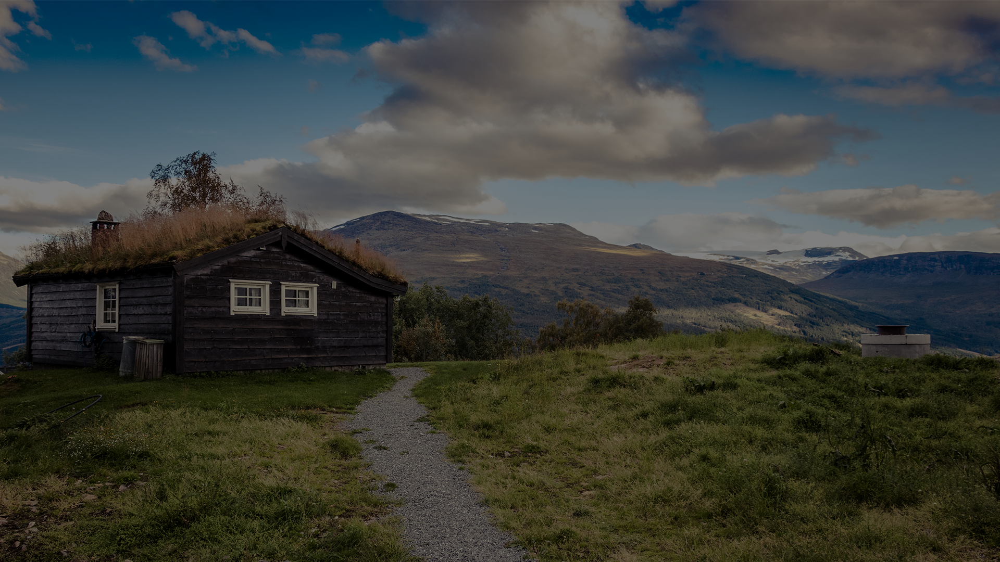
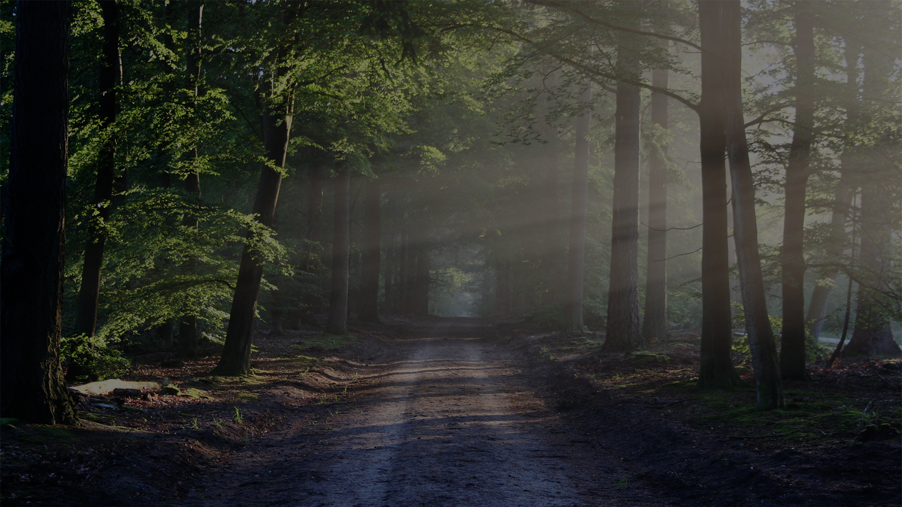

XY Photography
“What i like about photographs is that they capture a moment that’s gone forever, impossible to reproduce.”
-Karl Lagerfeld
“The camera is an instrument that teaches people how to see without a camera.”
-Dorothea Lange
“There are no bad pictures; that's just how your face looks sometimes.”
-Abraham Lincoln
“The whole point of taking pictures is so that you don’t have to explain things with words.”
-Elliott Erwitt
“A photograph can be an instant of life captured for eternity that will never cease looking back at you.”
-Brigitte Bardot
“There is one thing the photograph must contain, the humanity of the moment.”
-Robert Frank
“In photography there is a reality so subtle that it becomes more real than reality.”
-Alfred Stieglitz
“Taking pictures is like tiptoeing into the kitchen late at night and stealing Oreo cookies.”
-Diane Arbus

